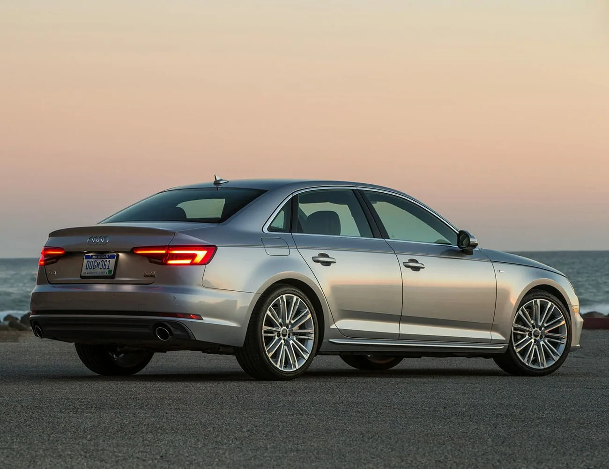
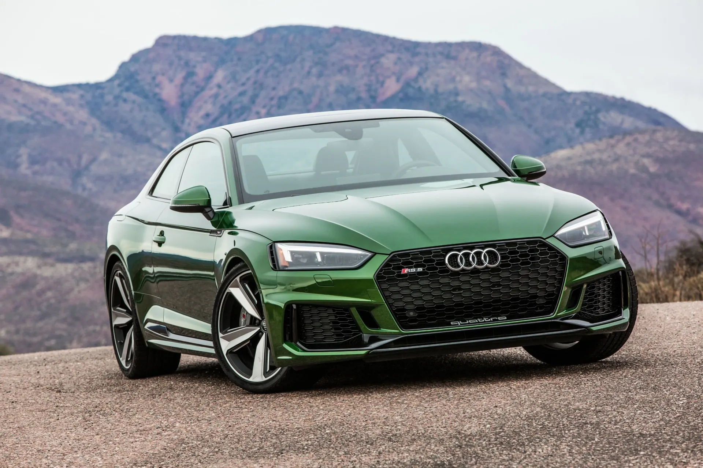
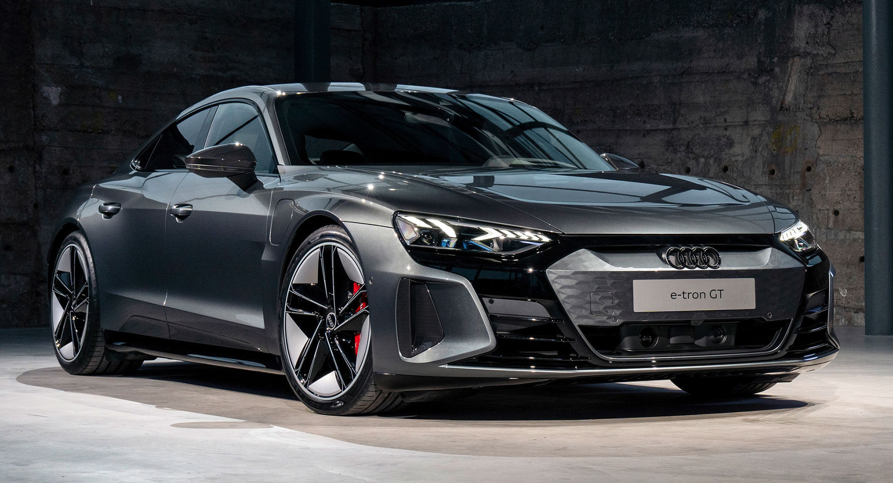

Audi offers the quattro drive in different versions customised for each model. In the compact construction series with transversely mounted engine, a multi-disc clutch with hydraulic actuation and electronic control is mounted on the rear axle. The multi-disc clutch is located on the front axle in the R8 mid-engine sports car. These active systems distribute the forces variably to both axles depending on the driving situation.
The self-locking centre differential, which is used in many Audi models with a front-mounted longitudinal engine, is a purely mechanical epicyclic gear.
The quattro drive
Read More

Audi has been driving quattro technology forward for 35 years. With more than eight million models produced with quattro technology, Audi is the most successful premium manufacturer of vehicles with permanent all-wheel drive worldwide. With the Audi lunar quattro perhaps soon also on the moon. With quattro, Audi has achieved a milestone in automotive history - no other manufacturer had a high-speed, lightweight four-wheel drive for large series to offer in 1980.
The quattro technology
Read More

The quattro four-wheel drive is a cornerstone on which Audi stands. Now the brand strengthens it further – with new models and new technologies. The quattro in the electrified power train represents a completely new concept for the mobility of the future.
Audi also celebrated numerous motor sport triumphs with quattro technology.
The quattro four-wheel drive
Read More

The A4 is Audi’s compact car, offered as a sedan and more rugged “Allroad” wagon. The current generation debuted for the 2016 model year. The A4 sedan was one of the final Audi models to lose a manual transmission option or 2019. The Allroad was the Audi lineup’s only U.S. wagon until the recent arrival of the RS 6 Avant and A6 Allroad.
A4 / S4
Read More

The Audi A5 is an A4 with a more expensive body-style: coupe, cabriolet or sportback. The Sportback, coupe and cabriolet each employ the same engine as the A4. S5 Sportback, coupe and cabriolet versions use the same 3.0-liter V6 found in the S4.
A5 / S5 / RS 5
Read More

The Audi e-tron GT is a battery electric executive car produced by Audi since late 2020 as part of the e-tron battery electric sub-brand, and the third fully electric car model, after Q8 e-tron and Q8 e-tron Sportback SUVs. It is also Audi's first full-sized electric sedan, and the RS e-tron GT, put on the market in 2021 is, in terms of 0-60 times, the fastest Audi sedan to date.
Audi e-tron GT
Read More